Recent work
Lawns and gardens around the Hills
Drag the sliders to see a job come together, then scroll through the gallery.
Before and after
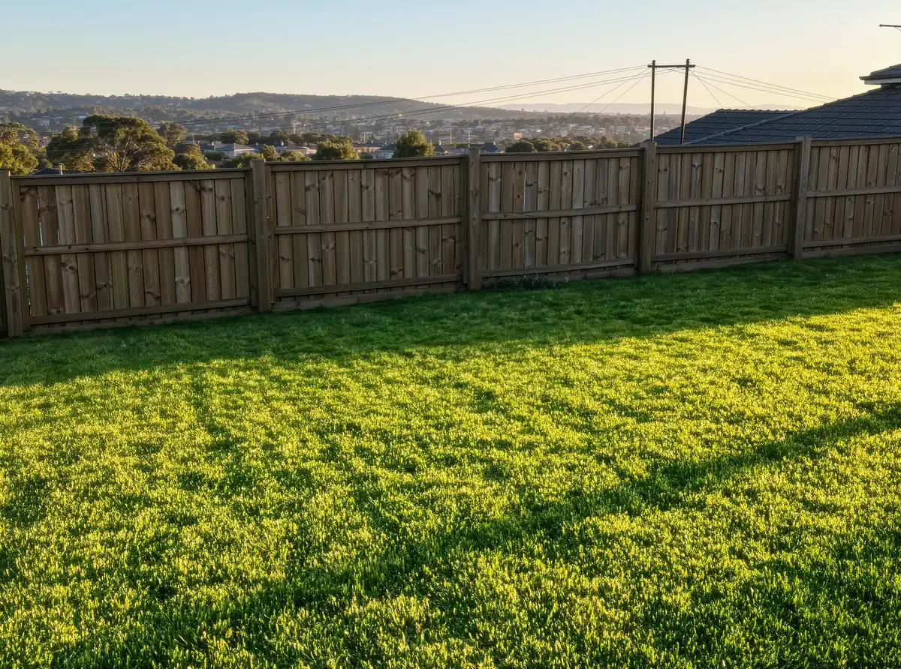
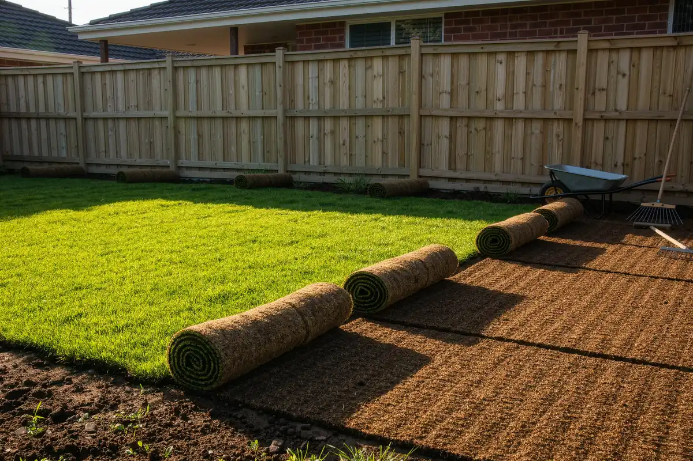
BeforeAfter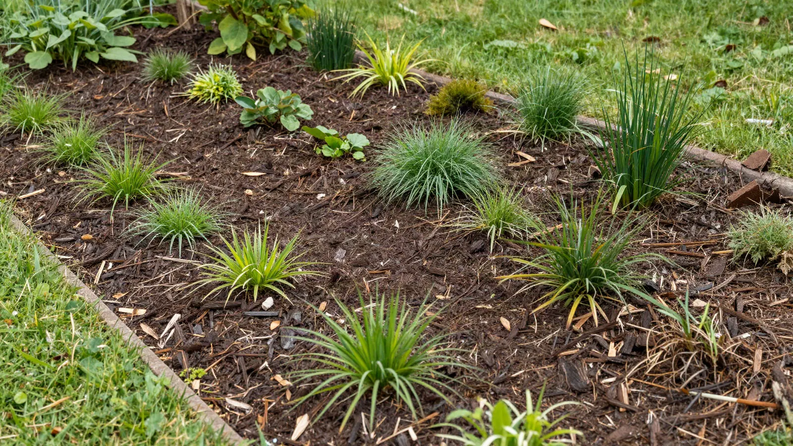
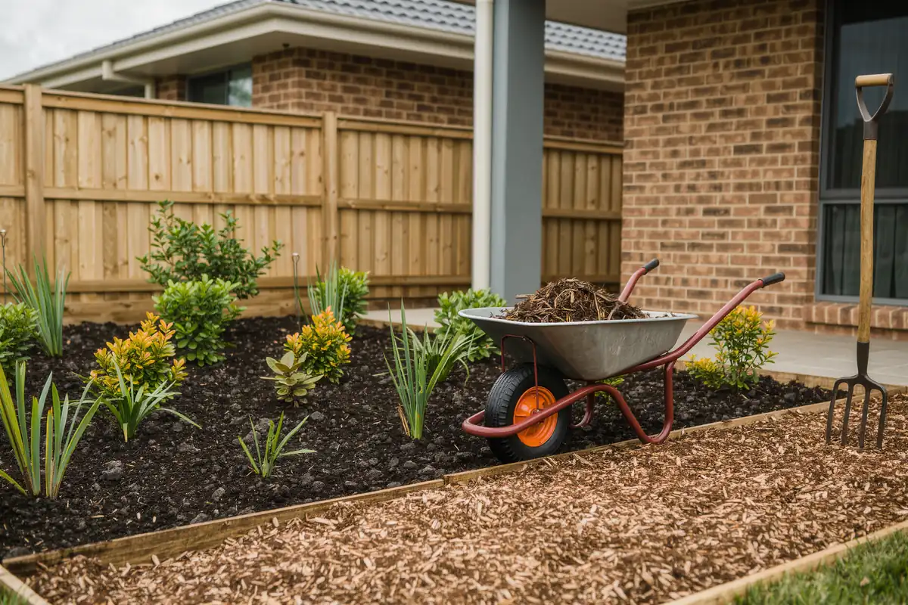
BeforeAfterGallery
Regular rounds and one-off jobs.
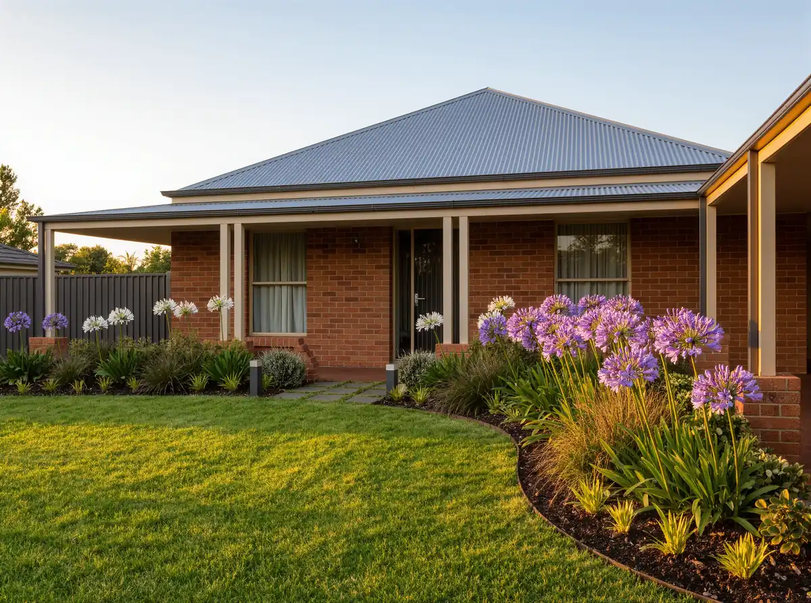
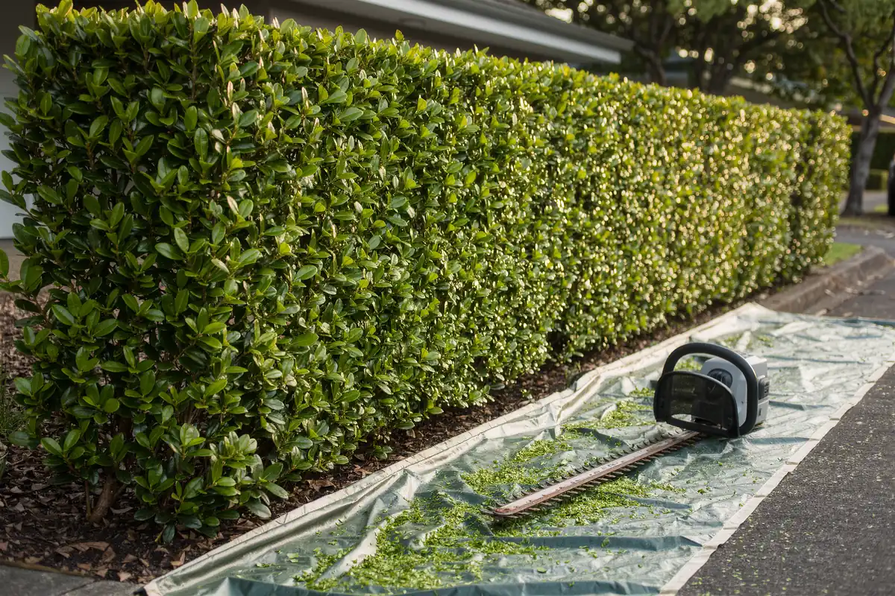
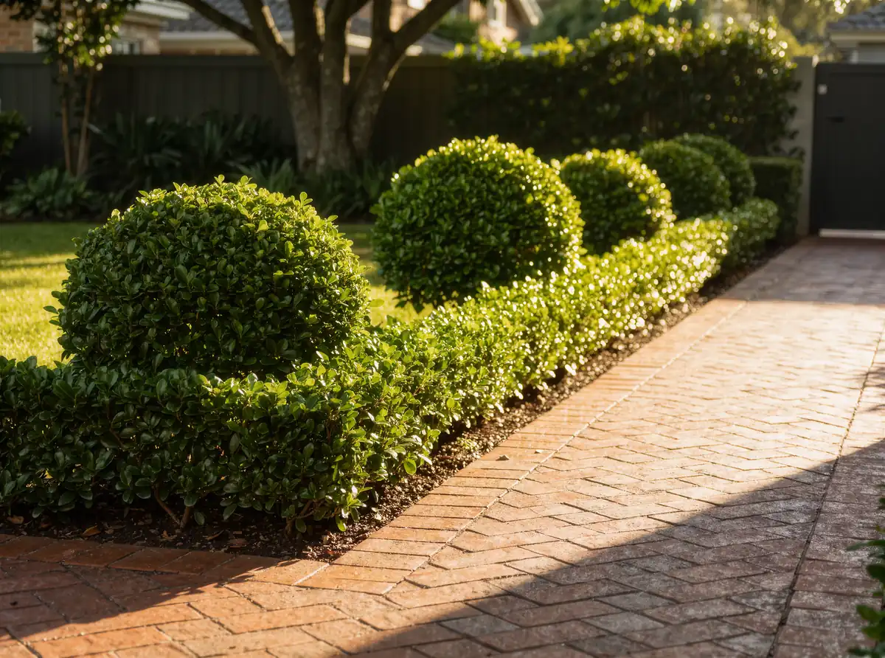
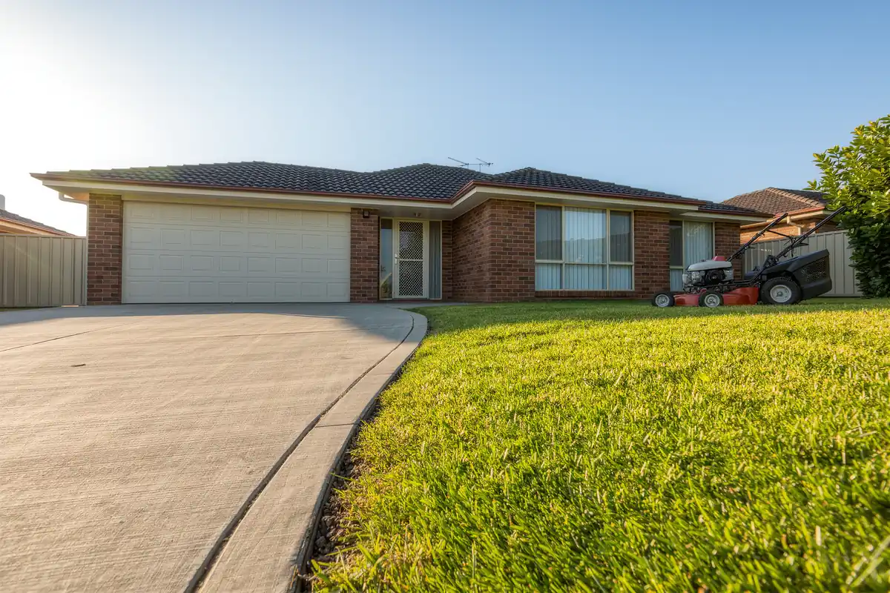
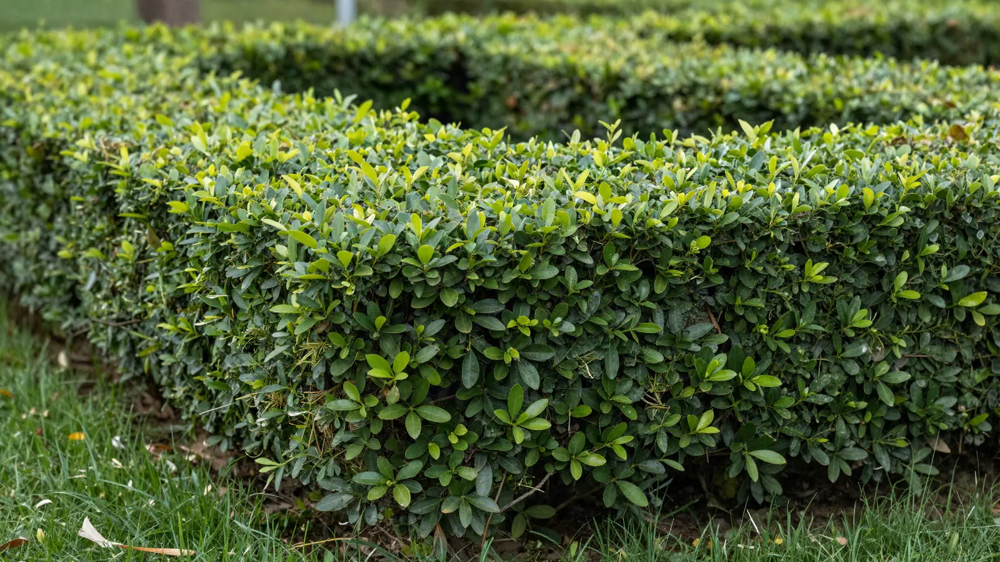
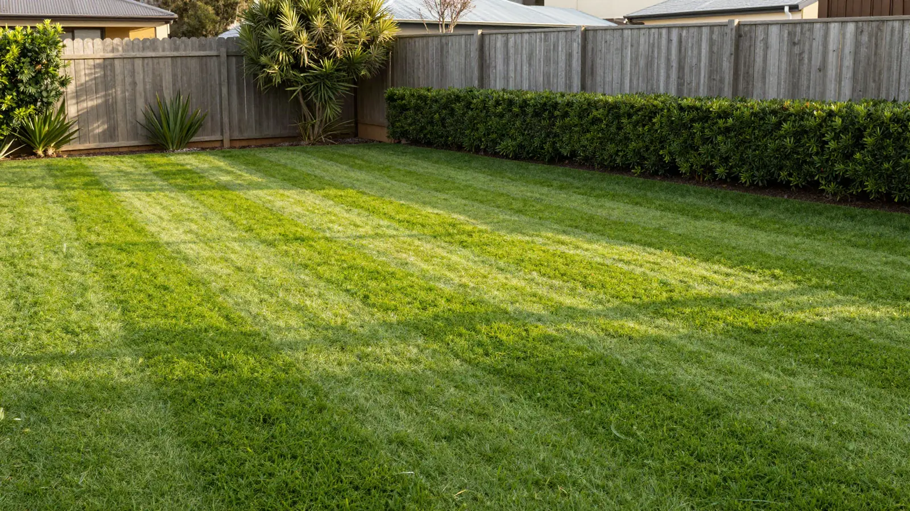
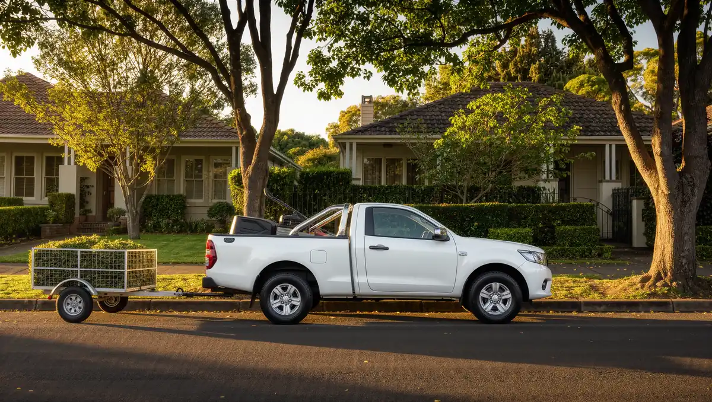
Like what you see? Read about our services and prices or check if we cover your suburb.
Want your garden looking like this?
Send through a few details and we will get back to you with a price.